Modèles additifs généralisés
Introduction
Les modèles additifs généralisés (ou GAM, pour generalized additive models) offrent une méthode flexible pour décrire une relation non-linéaire entre des prédicteurs et une variable réponse. Comme les modèles linéaires généralisés, les GAM peuvent être élargis pour inclure des effets aléatoires afin de représenter des données groupées.
Contenu du cours
Voici un aperçu des sujets présentés dans ce cours:
les splines de lissage, qui constituent les composantes de base d’un GAM;
comment ajuster des modèles additifs et vérifier leur ajustement;
comment représenter des interactions entre une variable numérique et un facteur, ou entre deux variables numériques, dans un modèle additif;
l’utilisation de modèles additifs généralisés pour les variables binaires ou de comptage;
l’utilisation de modèles additifs à effets mixtes pour les données groupées.
Splines de lissage
Les splines de lissage sont formées en combinant des fonctions simples pour approximer des formes fonctionnelles non-linéaires complexes.
Exemple
Le jeu de données airquality inclus avec R présente la concentration d’ozone de l’air mesurée à New York quotidiennement pendant cinq mois, en fonction de la radiation solaire, de la vitesse du vent et de la température.
data(airquality)
str(airquality)## 'data.frame': 153 obs. of 6 variables:
## $ Ozone : int 41 36 12 18 NA 28 23 19 8 NA ...
## $ Solar.R: int 190 118 149 313 NA NA 299 99 19 194 ...
## $ Wind : num 7.4 8 12.6 11.5 14.3 14.9 8.6 13.8 20.1 8.6 ...
## $ Temp : int 67 72 74 62 56 66 65 59 61 69 ...
## $ Month : int 5 5 5 5 5 5 5 5 5 5 ...
## $ Day : int 1 2 3 4 5 6 7 8 9 10 ...Remarquons d’abord que la concentration d’ozone varie de façon non-linéaire avec la température.
aq_temp0 <- ggplot(airquality, aes(x = Temp, y = Ozone)) +
geom_point()
aq_temp0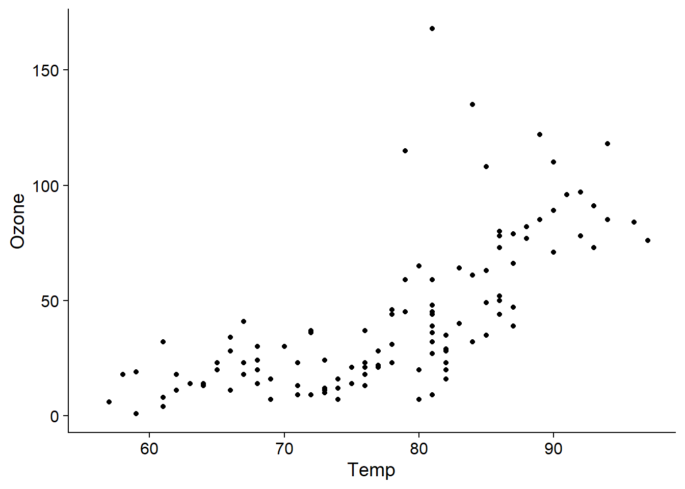
Une telle relation peut être modélisée dans un cadre de régression linéaire avec un polynôme, donc en incluant non seulement le prédicteur \(x\), mais aussi \(x^2\), \(x^3\), etc. dans la régression. Un des inconvénients de cette approche est qu’un polynôme de degré élevé (ex.: plus grand que 2) produit rarement un bon ajustement pour toutes les valeurs du prédicteur.
Par exemple, voici l’ajustement de polynômes de degré 1 à 4 pour notre exemple de la concentration d’ozone en fonction de la température. Le polynôme de degré 4 semble bien s’ajuster jusqu’à une température d’environ 90 degrés F, où la courbe décroît en raison de la forme du polynôme même s’il ne s’agit pas nécessairement d’un effet réaliste ici.
aq_temp1 <- aq_temp0 + geom_smooth(method = "lm") + labs(title = "y ~ x")
aq_temp2 <- aq_temp0 + geom_smooth(method = "lm", formula = y ~ poly(x, 2)) +
labs(title = "y ~ poly(x, 2)")
aq_temp3 <- aq_temp0 + geom_smooth(method = "lm", formula = y ~ poly(x, 3)) +
labs(title = "y ~ poly(x, 3)")
aq_temp4 <- aq_temp0 + geom_smooth(method = "lm", formula = y ~ poly(x, 4)) +
labs(title = "y ~ poly(x, 4)")
plot_grid(aq_temp1, aq_temp2, aq_temp3, aq_temp4)## `geom_smooth()` using formula 'y ~ x'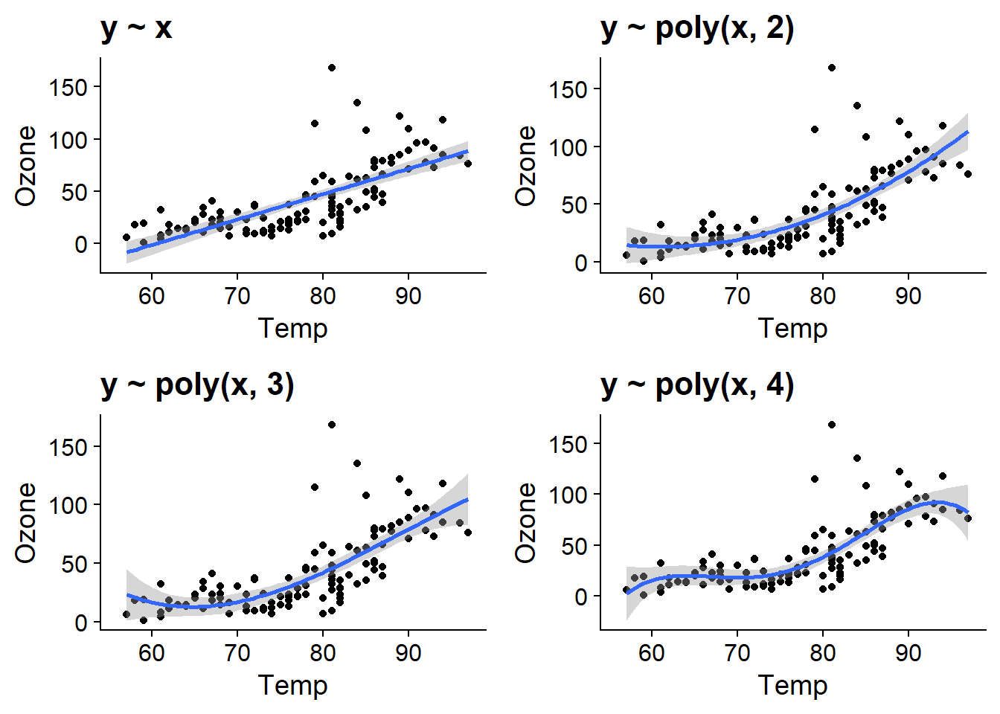
Forme d’un modèle additif
Dans une régression linéaire, la réponse \(y\) suit une distribution normale:
\[y \sim N(\mu, \sigma^2)\]
dont la moyenne dépend d’une combinaison linéaire des prédicteurs.
\[\mu = \beta_0 + \beta_1 x_1 + \beta_2 x_2 + ...\]
Dans un modèle additif, \(y\) suit toujours une distribution normale, mais sa moyenne n’est pas contrainte à varier linéairement avec chaque prédicteur. L’effet de chaque prédicteur est plutôt représenter par une fonction non-linéaire \(f(x_i)\).
\[\mu = \beta_0 + f(x_1) + f(x_2) + ...\]
Dans ce type de modèle, les \(f(x_i)\) proviennent d’une classe de fonctions appelées splines de lissage (smoothing splines), que nous décrirons mathématiquement un peu plus loin.
Modèle additif à un prédicteur
La fonction gam du package mgcv permet d’ajuster des modèles additifs. Dans l’exemple ci-dessous, nous spécifions un modèle où la concentration d’ozone est reliée à la température par une spline s(Temp).
library(mgcv)
o3_t <- gam(Ozone ~ s(Temp), data = airquality)La fonction plot appliquée au résultat de gam affiche la courbe estimée avec un intervalle de confiance à 95%. Nous choisissons d’afficher les résidus (residuals = TRUE) avec des points ouverts (symbole pch = 1).
plot(o3_t, residuals = TRUE, pch = 1)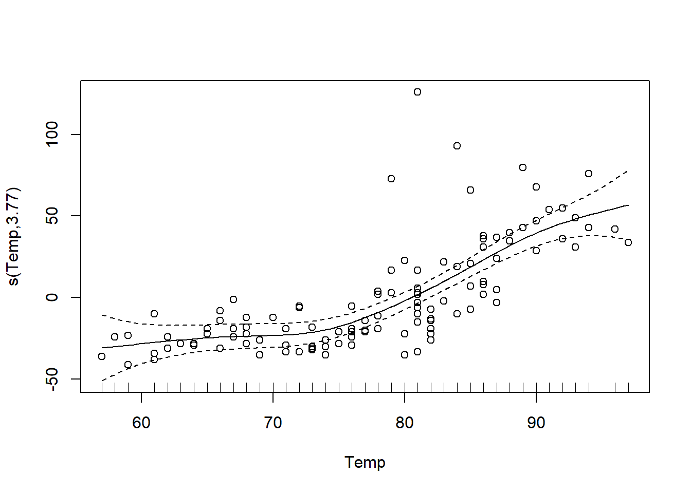
Choix des fonctions de base
Une spline de lissage est une combinaison linéaire de fonctions de base \(b\) (basis functions) avec des poids \(\beta\) estimés en fonction des données. Dans l’équation ci-dessous, \(k\) représente le nombre de bases utilisées pour former la spline.
\[f(x_i) = \sum_{j=1}^k \beta_j b_j(x_i)\]
Par défaut, gam utilise des splines en plaque mince (thin plate regression spline) comme fonctions de base, mais d’autres types de fonctions peuvent être spécifiés avec l’argument bs. Le graphique ci-dessous montre la forme de ces splines en plaque mince pour des valeurs de \(k\) allant de 3 à 9. Remarquez que le nombre de fonctions de base et leur complexité augmente avec \(k\), ce qui permet de produire des splines de plus en plus complexes.

Nous pouvons fixer le nombre de fonctions de base avec l’argument k de la fonction s(). Si nous ne spécifions pas \(k\), la fonction gam choisit k = 10 par défaut. Dans notre exemple, la courbe estimée avec k = 3 est plus simple, mais celles estimées avec k = 5 et k = 7 semblent équivalentes, ce qui montre que 5 fonctions de base sont suffisantes pour ce problème.
par(mfrow = c(1, 3), cex = 1)
plot(gam(Ozone ~ s(Temp, k = 3), data = airquality), residuals = TRUE, main = "k = 3")
plot(gam(Ozone ~ s(Temp, k = 5), data = airquality), residuals = TRUE, main = "k = 5")
plot(gam(Ozone ~ s(Temp, k = 7), data = airquality), residuals = TRUE, main = "k = 7")
Paramètre de lissage
En pratique, il n’est pas optimal de contrôler la complexité de la courbe en variant k. Il est préférable de choisir un k plus grand que nécessaire, pour assurer que le nombre de fonctions de base ne soit pas le “facteur limitant” pour l’ajustement du modèle. Cela cause cependant un risque de surajustement si nous avons, par exemple, 10 paramètres ajustables pour chaque prédicteur du modèle.
Pour éviter le surajustement, les paramètres des splines \(f(x_i)\) sont estimés en maximisant une version modifiée de la log-vraisemblance \(l\), en ajoutant une pénalité proportionnelle à la “rugosité” de la spline, mesurée par sa dérivée seconde.
\[2l - \sum_i \lambda_i \int f''(x_i)^2 dx_i\]
Le carré de la dérivée seconde de \(f(x_i)\), \(f''(x_i)^2\), prend une valeur plus élevée aux points où la spline change rapidement de direction. L’intégrale dans l’équation ci-dessous calcule donc la “rugosité” moyenne de la spline. L’importance de cette pénalité est proportionnelle à un paramètre de lissage (smoothing parameter) \(\lambda_i\) choisi séparément pour chaque spline composante le modèle.
Comme on voit ci-dessous, plus \(\lambda_i\) est élevé, plus la courbe résultante est lisse (proche d’une droite). Ce paramètre contrôle donc le compromis entre ajustement aux données et simplicité de la courbe estimée.
par(mfrow = c(1, 3), cex = 1)
plot(gam(Ozone ~ s(Temp, sp = 0.001), data = airquality), residuals = TRUE, main = "sp = 0.001")
plot(gam(Ozone ~ s(Temp, sp = 0.1), data = airquality), residuals = TRUE, main = "sp = 0.1")
plot(gam(Ozone ~ s(Temp, sp = 10), data = airquality), residuals = TRUE, main = "sp = 10")
Le choix d’une valeur optimale de \(\lambda\) est réalisée par un des algorithmes implémentés par la fonction gam. Aujourd’hui, le maximum de vraisemblance restreint (method = "REML") est l’algorithme le plus recommandé.
o3_t <- gam(Ozone ~ s(Temp), data = airquality, method = "REML")Le REML était aussi l’algorithme utilisé pour estimer la variance des effets aléatoires dans un modèle mixte. Il existe en fait un lien entre les effets aléatoires et les modèles additifs. Sans entrer dans les détails mathématiques ici, notons que comme l’effet aléatoire fait un compromis entre un effet estimé indépendamment pour chaque groupe et un effet commun dans tous les groupes, la spline fait un compromis entre une droite et une fonction irrégulière qui passerait par tous les points.
Pourquoi un modèle additif?
Les modèles additifs ont l’avantage d’offrir beaucoup de flexibilité dans la représentation du lien entre prédicteurs et variable réponse. Néanmoins, le fait que la réponse soit une fonction additive permet d’isoler l’effet de chacun de ces prédicteurs. En ce sens, les GAM sont plus facilement interprétables que d’autres modèles très flexibles (comme les forêts aléatoires).
En contrepartie, comme la spline n’a pas d’équation paramétrique simple, seule une visualisation de la fonction permet de comprendre les effets estimés. Aussi, puisqu’on estime \(k\) paramètres par prédicteur, les GAM demandent un temps de calcul important pour les modèles complexes.
Ajustement des modèle additifs
Le modèle suivant inclut des splines pour les trois prédicteurs (température, vitesse du vent et radiation solaire).
mod_o3 <- gam(Ozone ~ s(Temp) + s(Wind) + s(Solar.R),
data = airquality, method = "REML")Note: Si les effets de tous les prédicteurs sont représentés par des splines ici, on peut aussi combiner splines de lissage s() pour certains prédicteurs et effets linéaires pour d’autres dans un GAM.
La commande plot produit maintenant un graphique pour chaque spline estimée. Les splines sont estimées avec une moyenne de zéro. Ainsi:
l’ordonnée à l’origine du modèle représente la valeur moyenne de la réponse;
les effets représentés par chaque spline représentent la variation de la réponse par rapport à cette moyenne en fonction de la valeur du prédicteur.
par(mfrow = c(1, 3), cex = 1)
plot(mod_o3, residuals = TRUE)
Nous pouvons aussi effectuer une translation de chaque spline égale à l’ordonnée à l’origine (shift = coef(mod_o3)[1]); dans ce cas, les graphiques montrent la moyenne de la réponse en fonction du prédicteur, plutôt qu’une différence par rapport à sa moyenne. Cette version peut être plus facile à interpréter.
par(mfrow = c(1, 3), cex = 1)
plot(mod_o3, shift = coef(mod_o3)[1], seWithMean = TRUE, residuals = TRUE)
Aussi, l’argument seWithMean = TRUE inclut l’incertitude sur la réponse moyenne (l’ordonnée à l’origine) dans l’intervalle de confiance des splines. En comparant les deux graphiques, cela a pour effet d’élargir légèrement l’intervalle, surtout au milieu du graphique.
Nous pouvons consulter les coefficients du modèle avec la fonction coef: ceux-ci incluent l’ordonnée à l’origine et 9 coefficients pour chaque spline.
coef(mod_o3)## (Intercept) s(Temp).1 s(Temp).2 s(Temp).3 s(Temp).4 s(Temp).5
## 42.09909910 -12.08591563 8.40378528 -0.43034237 0.63812808 -0.05397508
## s(Temp).6 s(Temp).7 s(Temp).8 s(Temp).9 s(Wind).1 s(Wind).2
## -0.64836948 -0.47596943 -3.94323347 2.55758901 -6.32106628 -5.34319449
## s(Wind).3 s(Wind).4 s(Wind).5 s(Wind).6 s(Wind).7 s(Wind).8
## 2.43199369 5.31801099 1.28624165 -5.40270159 -0.55172226 -32.22412238
## s(Wind).9 s(Solar.R).1 s(Solar.R).2 s(Solar.R).3 s(Solar.R).4 s(Solar.R).5
## -13.15942337 1.93993397 -0.74784376 0.28873326 -0.45574360 0.25027309
## s(Solar.R).6 s(Solar.R).7 s(Solar.R).8 s(Solar.R).9
## 0.62997910 0.01586162 2.86340308 4.00836972Le paramètre de lissage pour chaque spline est contenu dans l’élément sp du résultat.
mod_o3$sp## s(Temp) s(Wind) s(Solar.R)
## 0.2236120 0.2258963 4.5972792Diagnostics de l’ajustement
La fonction gam.check produit les graphiques de diagnostic du modèle, ainsi que les résultats d’un test d’ajustement dont nous discuterons un peu plus loin.
par(mfrow = c(2, 2))
gam.check(mod_o3)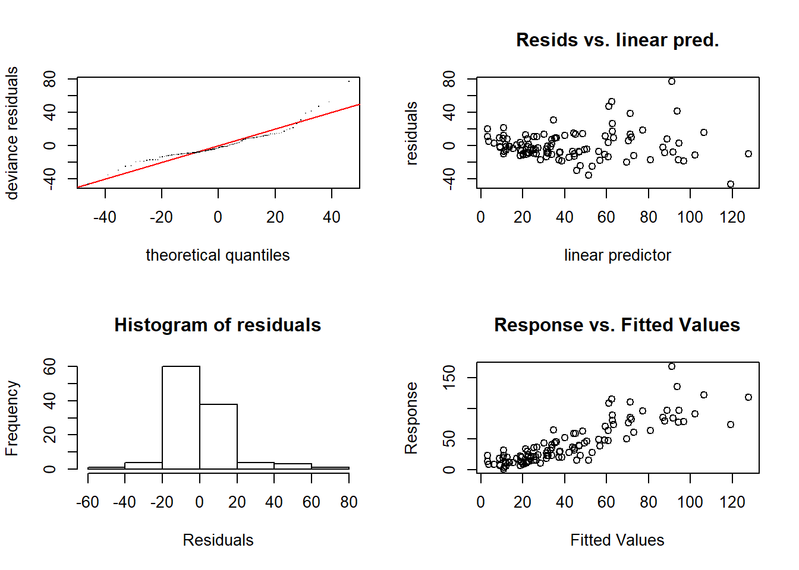
##
## Method: REML Optimizer: outer newton
## full convergence after 5 iterations.
## Gradient range [-8.990922e-05,0.0003184666]
## (score 473.6277 & scale 312.3537).
## Hessian positive definite, eigenvalue range [0.03296797,53.55641].
## Model rank = 28 / 28
##
## Basis dimension (k) checking results. Low p-value (k-index<1) may
## indicate that k is too low, especially if edf is close to k'.
##
## k' edf k-index p-value
## s(Temp) 9.00 3.42 0.77 <2e-16 ***
## s(Wind) 9.00 3.38 1.04 0.58
## s(Solar.R) 9.00 1.67 0.94 0.26
## ---
## Signif. codes: 0 '***' 0.001 '**' 0.01 '*' 0.05 '.' 0.1 ' ' 1Comme pour un modèle linéaire, le graphique des résidus vs. valeurs prédites (en haut à droite) ne devrait pas présenter de tendance, la variance des résidus devrait être homogène et le graphique quantile-quantile devrait s’approche d’une droite (normalité des résidus). Ici, nous observons quelques valeurs extrêmes à droite de la distribution. De plus, la variance des résidus semble augmenter avec la valeur prédite.
Les résultats du test imprimé Basis dimension (k) checking results indiquent le nombre de degrés de liberté effectifs du modèle (edf) par rapport à la valeur choisie pour \(k\). Les degrés de liberté effectifs estiment la “complexité” de la spline: par exemple, la relation entre radiation solaire et concentration d’ozone se situe entre une droite (degré 1) et une courbe quadratique (degré 2), tandis que les deux autres splines ont un degré entre 3 et 4.
La valeur \(p\) dans la dernière colonne vise à détecter une répartition non-aléatoire des résidus. En général, une valeur significative peut signifier un sous-ajustement du modèle aux données, surtout si edf est près du nombre de fonctions de base \(k\). Dans ce cas, il est utile de répéter l’ajustement en augmentant \(k\).
Ici, edf est bien en-dessous de \(k\), donc le mauvais ajustement peut être dû à la variance non-homogène des résidus remarquée sur les graphiques de diagnostic.
En appliquant une transformation logarithmique à la concentration d’ozone, l’ajustement se trouve amélioré, même si la variance n’est pas tout à fait homogène; la transformation semble avoir “surcompensé” en produisant plus de valeurs extrêmes à gauche.
mod_lo3 <- gam(log(Ozone) ~ s(Temp) + s(Wind) + s(Solar.R),
data = airquality, method = "REML")
par(mfrow = c(2, 2))
gam.check(mod_lo3)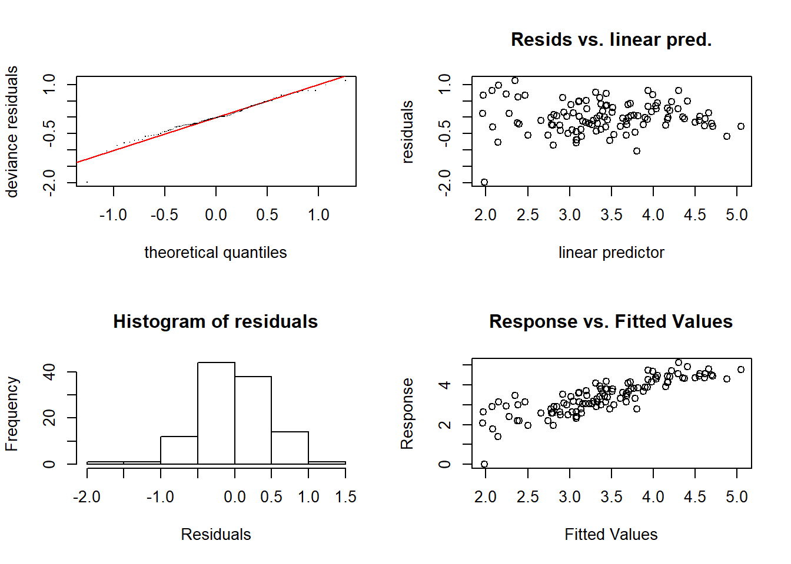
##
## Method: REML Optimizer: outer newton
## full convergence after 5 iterations.
## Gradient range [-4.834294e-06,3.917609e-05]
## (score 86.02355 & scale 0.2337533).
## Hessian positive definite, eigenvalue range [0.05712074,53.52062].
## Model rank = 28 / 28
##
## Basis dimension (k) checking results. Low p-value (k-index<1) may
## indicate that k is too low, especially if edf is close to k'.
##
## k' edf k-index p-value
## s(Temp) 9.00 1.95 0.96 0.365
## s(Wind) 9.00 2.46 0.86 0.055 .
## s(Solar.R) 9.00 2.16 1.01 0.535
## ---
## Signif. codes: 0 '***' 0.001 '**' 0.01 '*' 0.05 '.' 0.1 ' ' 1Voici les résultats du modèle pour log(Ozone). Remarquez que le nombre de degrés de liberté effectifs est indiqué sur chaque axe des \(y\) (ex.: s(Temp, 1.95)).
par(mfrow = c(1, 3))
plot(mod_lo3, residuals = TRUE)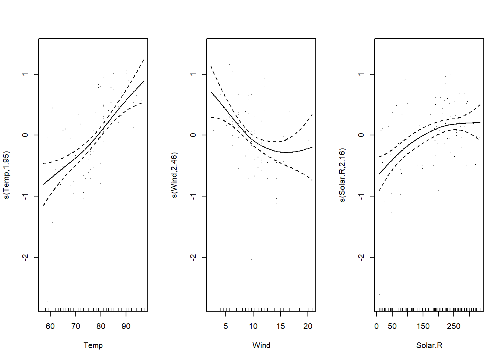
Comme pour les autres types de modèles, la commande summary affiche un sommaire de l’ajustement. Les premières lignes indiquent qu’il s’agit d’un modèle avec distribution normale (gaussian) des résidus et aucune fonction de lien. Suivent les estimés des termes paramétriques du modèle, ici seulement l’ordonnée à l’origine, puis un tableau de la significativité de chaque spline. Brièvement, une spline est significative si on ne peut pas tracer une ligne horizontale à l’intérieur de son intervalle de confiance, qui représenterait l’absence d’effet du prédicteur.
summary(mod_lo3)##
## Family: gaussian
## Link function: identity
##
## Formula:
## log(Ozone) ~ s(Temp) + s(Wind) + s(Solar.R)
##
## Parametric coefficients:
## Estimate Std. Error t value Pr(>|t|)
## (Intercept) 3.41593 0.04589 74.44 <2e-16 ***
## ---
## Signif. codes: 0 '***' 0.001 '**' 0.01 '*' 0.05 '.' 0.1 ' ' 1
##
## Approximate significance of smooth terms:
## edf Ref.df F p-value
## s(Temp) 1.953 2.450 21.106 < 2e-16 ***
## s(Wind) 2.462 3.121 6.470 0.00042 ***
## s(Solar.R) 2.158 2.719 9.679 3.43e-05 ***
## ---
## Signif. codes: 0 '***' 0.001 '**' 0.01 '*' 0.05 '.' 0.1 ' ' 1
##
## R-sq.(adj) = 0.688 Deviance explained = 70.7%
## -REML = 86.024 Scale est. = 0.23375 n = 111Finalement, le modèle explique environ 69% de la variance de la réponse selon le \(R^2\) ajusté. La déviance expliquée est un pseudo-\(R^2\) qui peut être utilisée à la place du \(R^2\) lorsqu’il s’agit d’un modèle additif généralisé.
Concurvité
Dans une régression linéaire multiple, la collinéarité entre les prédicteurs (corrélation entre un prédicteur et une combinaison des autres) pouvait limiter notre capacité d’estimer séparément l’effet de chaque prédicteur. Pour un modèle additif, la concurvité mesure un problème similaire; en raison de l’ajustement de splines, une corrélation même non-linéaire pour mener à confondre les effets de deux prédicteurs.
concurvity(mod_lo3)## para s(Temp) s(Wind) s(Solar.R)
## worst 2.213704e-24 0.5929964 0.5600026 0.3969107
## observed 2.213704e-24 0.4607831 0.3684667 0.2880898
## estimate 2.213704e-24 0.4507423 0.2971714 0.2507011La fonction concurvity donne plusieurs estimés de la concurvité pour chaque prédicteur. Celle-ci est analogue au \(R^2\) du modèle prédisant un prédicteur à partir des autres; ainsi, une valeur >0.9 serait équivalente à un VIF > 10 pour la collinéarité d’un modèle linéaire.
Ici, la concurvité est inférieur à 0.6 dans le pire des cas, donc il n’y a pas de raison d’omettre un prédicteur. Notez que la corrélation la plus grande se situe entre température et vitesse du vent, comme nous pouvons voir sur le graphique ci-dessous.
ggplot(airquality, aes(x = Temp, y = Wind)) +
geom_point()
Modéliser les interactions
Dans cette section, nous verrons commencer modéliser l’interaction entre un effet non-linéaire et un facteur (variable catégorielle), ou entre deux effets non-linéaires.
Nous utiliserons le jeu de données CanWeather du package gamair, qui contient des mesures de température T à chaque jour (time) d’une année pour 35 villes canadiennes (place). La latitude de chaque ville est incluse et ces villes sont groupées en quatre régions (Arctique, Atlantique, Continentale et Pacifique).
library(gamair)
data(canWeather)
str(CanWeather)## 'data.frame': 12775 obs. of 5 variables:
## $ time : num 1 2 3 4 5 6 7 8 9 10 ...
## $ T : num -3.6 -3.1 -3.4 -4.4 -2.9 -4.5 -5.5 -3.1 -4 -5 ...
## $ region : Factor w/ 4 levels "Arctic","Atlantic",..: 2 2 2 2 2 2 2 2 2 2 ...
## $ latitude: num 47.3 47.3 47.3 47.3 47.3 ...
## $ place : Factor w/ 35 levels "Arvida","Bagottville",..: 24 24 24 24 24 24 24 24 24 24 ...Le graphique suivant montre la courbe des températures observées pour chaque ville, codée en fonction de la latitude.
ggplot(CanWeather, aes(x = time, y = T, color = latitude, group = place)) +
geom_line(alpha = 0.5)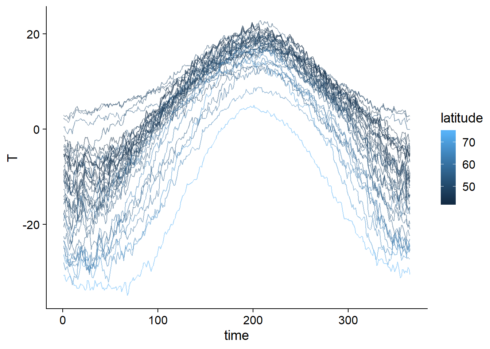
Nous ajustons d’abord un modèle sans interaction, où la température est prédite par l’addition d’une spline en fonction du jour de l’année et d’un effet constant de la région.
mod_t <- gam(T ~ s(time, k = 20) + region, data = CanWeather, method = "REML")Notes:
Les variables catégorielles doivent être codées comme facteurs. Contrairement aux autres fonctions comme
lm,gamne convertit pas automatiquement les variables textuelles en facteurs.Ici, nous avons choisi
k = 20pours(time)après avoir obtenu un sous-ajustement avec la valeur de \(k\) par défaut.
Pour représenter à la fois les splines et les coefficients paramétriques, il faut spécifier all.terms = TRUE dans plot. L’argument pages = 1 indique de combiner les graphiques en un seul graphique multi-panneau.
plot(mod_t, all.terms = TRUE, pages = 1, shift = coef(mod_t)[1])
Notez que les intervalles de confiance autant pour la spline que pour les effets régionaux sont très étroits, en raison du grand nombre de données. Ici, l’ordonnée à l’origine représente la température moyenne pour la région arctique. Puisque nous avons utilisé l’argument shift, la spline illustrée représente donc la prédiction de la température par jour de l’année pour l’arctique. Pour les autres régions, la prédiction serait égale à cette même spline décalée vers le haut en fonction du coefficient régional montré dans le graphique à droite.
Voici le sommaire des résultats de ce modèle:
summary(mod_t)##
## Family: gaussian
## Link function: identity
##
## Formula:
## T ~ s(time, k = 20) + region
##
## Parametric coefficients:
## Estimate Std. Error t value Pr(>|t|)
## (Intercept) -11.8037 0.1389 -85.00 <2e-16 ***
## regionAtlantic 16.3814 0.1521 107.69 <2e-16 ***
## regionContinental 11.2448 0.1552 72.43 <2e-16 ***
## regionPacific 19.6375 0.1756 111.80 <2e-16 ***
## ---
## Signif. codes: 0 '***' 0.001 '**' 0.01 '*' 0.05 '.' 0.1 ' ' 1
##
## Approximate significance of smooth terms:
## edf Ref.df F p-value
## s(time) 15.45 17.55 4029 <2e-16 ***
## ---
## Signif. codes: 0 '***' 0.001 '**' 0.01 '*' 0.05 '.' 0.1 ' ' 1
##
## R-sq.(adj) = 0.871 Deviance explained = 87.2%
## -REML = 37642 Scale est. = 21.114 n = 12775Voici les graphiques de diagnostic du modèle:
par(mfrow = c(2, 2))
gam.check(mod_t)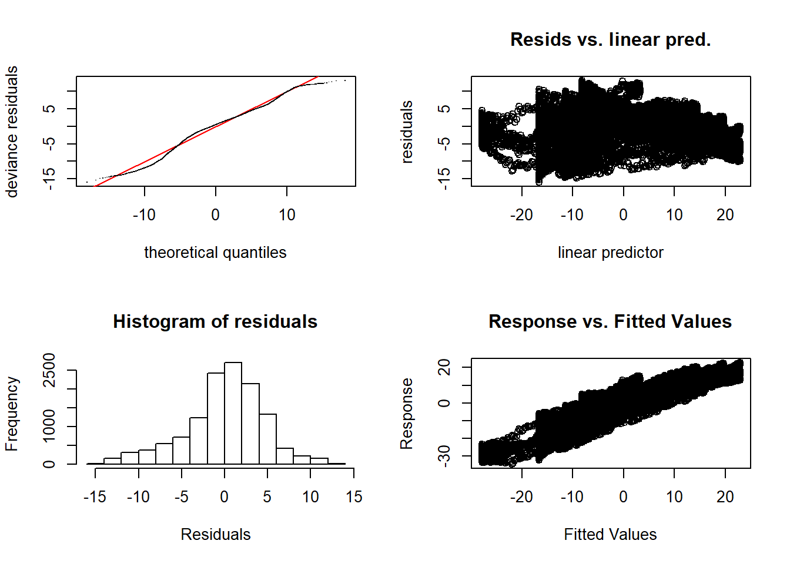
##
## Method: REML Optimizer: outer newton
## full convergence after 8 iterations.
## Gradient range [-5.649263e-05,5.186556e-05]
## (score 37641.65 & scale 21.11364).
## Hessian positive definite, eigenvalue range [7.735162,6385.008].
## Model rank = 23 / 23
##
## Basis dimension (k) checking results. Low p-value (k-index<1) may
## indicate that k is too low, especially if edf is close to k'.
##
## k' edf k-index p-value
## s(time) 19.0 15.5 1.02 0.90Même s’il n’y a pas de tendance trop forte au niveau des résidus, nous savons que la variation de température durant l’année n’est pas la même pour chaque région (ex.: les variations saisonnières de \(T\) sont moins prononcées sur la côte Pacifique qu’au milieu du continent). Le modèle suivant tente de reproduire cet effet.
Interaction entre spline et facteur
Dans le modèle ci-dessous, s(time, by = region) signifie qu’une spline de \(T\) en fonction du temps doit être estimée séparément pour chacune des quatre régions. Il s’agit donc d’une interaction entre la région et le jour de l’année. Puisque chaque spline a une moyenne de 0, il faut tout de même inclure le terme séparé + region pour représenter les différences de température moyenne entre les régions.
Nous avons aussi remplacé la fonction gam par bam: celle-ci utilise un algorithme différent pour économiser de la mémoire et du temps de calcul lorsqu’on a un modèle complexe avec un grand jeu de données. Elle est toutefois moins efficace que gam pour un petit jeu de données.
mod_t_by <- bam(T ~ s(time, k = 20, by = region) + region,
data = CanWeather, method = "REML")Les splines résultantes montrent bien la différence entre la variabilité annuelle de température par région. Rappelons qu’excepté pour la région arctique, il faut ajouter l’effet constant de la région (dernier graphique) à chaque courbe pour obtenir les prédictions de température pour cette région.
plot(mod_t_by, pages = 1, all.terms = TRUE, shift = coef(mod_t_by)[1])
Le modèle résultant explique maintenant 91% de la variabilité de \(T\).
summary(mod_t_by)##
## Family: gaussian
## Link function: identity
##
## Formula:
## T ~ s(time, k = 20, by = region) + region
##
## Parametric coefficients:
## Estimate Std. Error t value Pr(>|t|)
## (Intercept) -11.8353 0.1149 -103.0 <2e-16 ***
## regionAtlantic 16.3862 0.1258 130.2 <2e-16 ***
## regionContinental 11.2358 0.1284 87.5 <2e-16 ***
## regionPacific 19.6500 0.1453 135.3 <2e-16 ***
## ---
## Signif. codes: 0 '***' 0.001 '**' 0.01 '*' 0.05 '.' 0.1 ' ' 1
##
## Approximate significance of smooth terms:
## edf Ref.df F p-value
## s(time):regionArctic 13.13 15.57 962.1 <2e-16 ***
## s(time):regionAtlantic 14.52 16.82 2264.6 <2e-16 ***
## s(time):regionContinental 15.62 17.67 2896.4 <2e-16 ***
## s(time):regionPacific 9.86 12.08 418.0 <2e-16 ***
## ---
## Signif. codes: 0 '***' 0.001 '**' 0.01 '*' 0.05 '.' 0.1 ' ' 1
##
## R-sq.(adj) = 0.912 Deviance explained = 91.2%
## -REML = 35279 Scale est. = 14.441 n = 12775Il existe un autre type d’interaction entre une spline et un facteur, appelée factor-smooth interaction (fs). Dans ce cas, gam estime une spline séparée pour chaque niveau du facteur, mais les splines doivent avoir le même paramètre de lissage. Chacune des splines peut aussi avoir une moyenne différente de 0, donc il n’est pas nécessaire d’ajouter un effet additif de la région.
mod_t_fs <- bam(T ~ s(time, region, bs = "fs"), data = CanWeather, method = "REML")
plot(mod_t_fs, shift = coef(mod_t_fs)[1])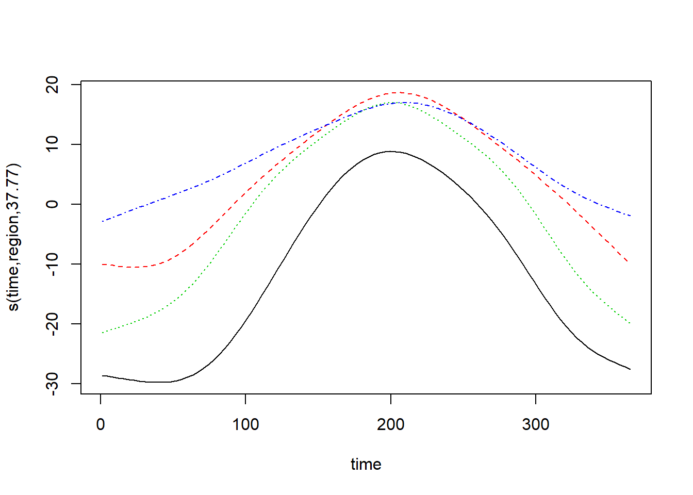
Pour ce type d’interaction, la commande plot affiche toutes les splines sur un même graphique. Malheureusement, il n’est pas facile d’afficher une légende pour associer chaque spline à une valeur du facteur.
L’utilisation de bs = "fs" par rapport à by = ... est surtout recommandée lorsque le facteur a plusieurs niveaux et qu’il n’y a peut-être pas assez de données par niveau pour estimer chaque paramètre de lissage de façon indépendante. Ici, les résultats sont à peu près les mêmes en raison du grand nombre de données et la version avec by, qui est un peu plus flexible, obtient un meilleur AIC.
AIC(mod_t)## [1] 75238.21AIC(mod_t_by)## [1] 70424.59AIC(mod_t_fs)## [1] 70453.95Interaction entre variables numériques
Supposons maintenant que nous souhaitons modéliser comment la courbe de température en fonction du temps varie selon la latitude. La fonction te (tensor product) définit une spline en plusieurs dimensions, où le paramètre de lissage est choisi séparément pour chaque dimension.
mod_t_lat <- bam(T ~ te(time, latitude) + region, data = CanWeather, method = "REML")Note: On peut aussi définir une spline en plusieurs dimensions avec s(x1, x2), dans lequel cas le même paramètre de lissage est utilisé pour les deux dimensions. Cette version sert surtout aux cas où les deux variables sont exprimées dans les mêmes unités, comme les coordonnées X et Y dans la modélisation de données spatiales.
Pour une spline en 2D, plot représente des courbes de niveau avec marge d’erreur (1 écart-type de part et d’autre).
plot(mod_t_lat)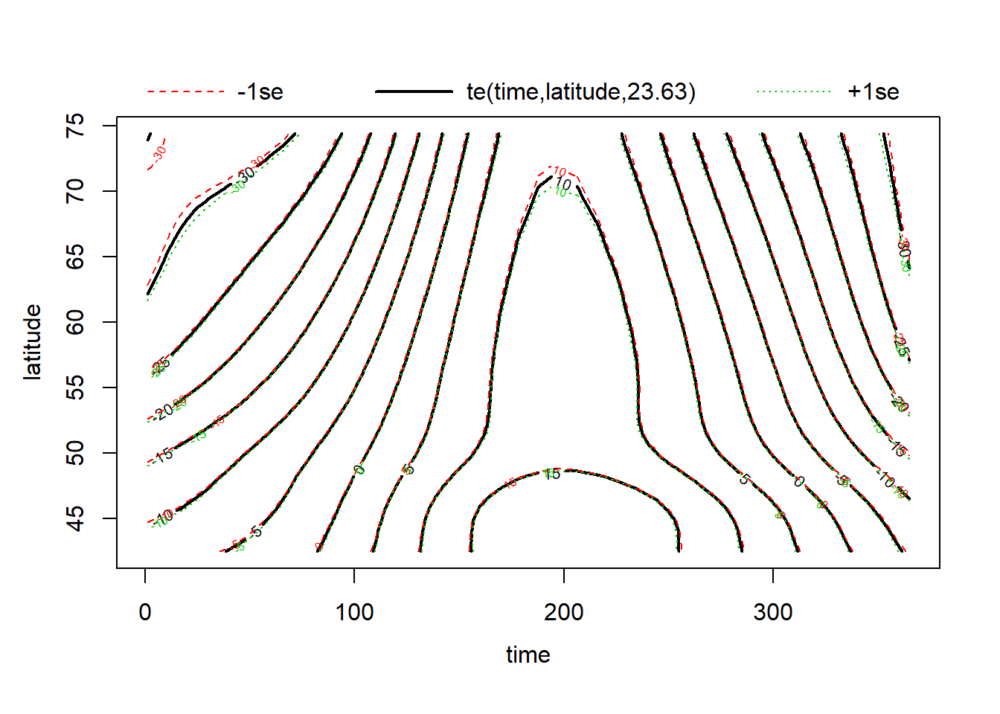
D’autres options de visualisation sont possibles en modifiant l’argument scheme. Par exemple, scheme = 2 ajoute des couleurs représentant la variable réponse (heatmap).
plot(mod_t_lat, scheme = 2)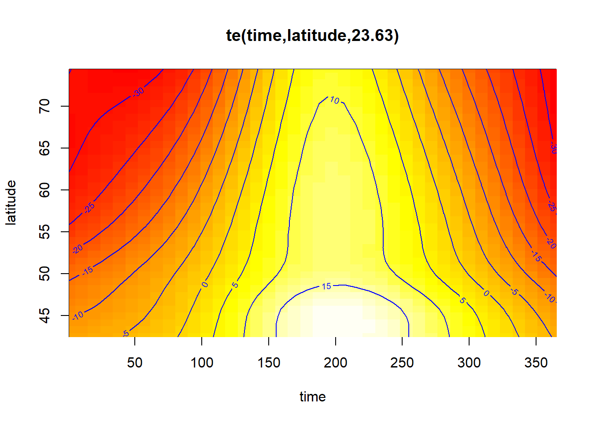
Les diagnostics du modèle semblent indiquer un sous-ajustement. Cependant, même si edf s’approche de \(k\), augmenter la valeur de \(k\) prend beaucoup de temps de calcul sans vraiment régler le problème. En fait, le mauvais ajustement pourrait être dû au fait que la relation entre température et latitude varie par région. (Vancouver est plus “nordique” en latitude que Rouyn-Noranda!)
par(mfrow = c(2, 2))
gam.check(mod_t_lat)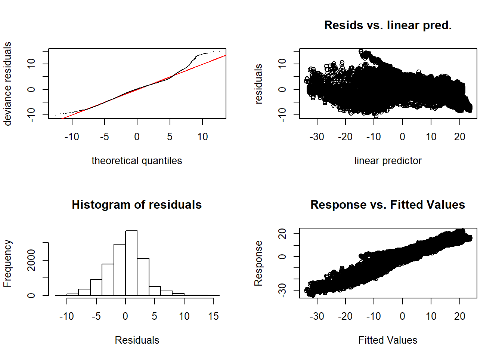
##
## Method: REML Optimizer: outer newton
## full convergence after 7 iterations.
## Gradient range [-0.001258148,0.001141736]
## (score 33013.51 & scale 10.17519).
## Hessian positive definite, eigenvalue range [3.181735,6384.01].
## Model rank = 28 / 28
##
## Basis dimension (k) checking results. Low p-value (k-index<1) may
## indicate that k is too low, especially if edf is close to k'.
##
## k' edf k-index p-value
## te(time,latitude) 24.0 23.6 0.22 <2e-16 ***
## ---
## Signif. codes: 0 '***' 0.001 '**' 0.01 '*' 0.05 '.' 0.1 ' ' 1Résumé: Interactions
y ~ s(x, by = z) + z: ajustement indépendant d’une spline de \(y\) vs. \(x\) pour chaque niveau du facteur \(z\).y ~ s(x, z, bs = "fs"): ajustement d’une spline de \(y\) vs. \(x\) pour chaque niveau du facteur \(z\), avec un paramètre de lissage commun.y ~ s(x1, x2): spline en deux dimensions avec paramètre de lissage unique.y ~ te(x1, x2): spline en deux dimensions avec paramètre de lissage différent dans chaque dimension.
Modèles additifs généralisés
Comme les modèles linéaires, les modèles additifs peuvent être généralisés en modifiant la distribution de la réponse (ex.: binomiale, Poisson) et en reliant le prédicteur additif à la réponse moyenne par une fonction de lien \(g\).
\[g(\mu) = \beta_0 + f(x_1) + f(x_2) + ...\]
Exemple
Pour illuster ce type de modèle, nous utiliserons le jeu de données Wells du package carData, qui présente les données d’une étude menée auprès de 3020 ménages au Bangladesh. Les puits utilisés par ces ménages avaient une concentration d’arsenic (variable arsenic, en multiples de 100 \(\mu g/L\)) supérieure au niveau jugé sûr. La réponse binaire switch indique si le ménage a changé de puits. En plus de la concentration d’arsenic, le tableau contient d’autres prédicteurs, dont la distance vers le puits sûr le plus près (distance en mètres).
library(carData)
data(Wells)
str(Wells)## 'data.frame': 3020 obs. of 5 variables:
## $ switch : Factor w/ 2 levels "no","yes": 2 2 1 2 2 2 2 2 2 2 ...
## $ arsenic : num 2.36 0.71 2.07 1.15 1.1 3.9 2.97 3.24 3.28 2.52 ...
## $ distance : num 16.8 47.3 21 21.5 40.9 ...
## $ education : int 0 0 10 12 14 9 4 10 0 0 ...
## $ association: Factor w/ 2 levels "no","yes": 1 1 1 1 2 2 2 1 2 2 ...Comme dans le cas des GLM, nous représentons une réponse binaire par une distribution binomiale avec lien logit. Le modèle suivant représente donc des effets non-linéaires et additifs de la concentration d’arsenic et de la distance sur \(\text{logit}(p) = \log \frac{p}{1-p}\), où \(p\) est la probabilité de changer de puits.
mod_wells <- gam(switch ~ s(arsenic) + s(distance), data = Wells,
family = binomial, method = "REML")Le sommaire des résultats indique des effets significatifs des deux prédicteurs, même si le pseudo-\(R^2\) (% de la déviance expliquée) est très faible, ce qui indique que ces facteurs n’expliquent qu’une petite partie de la variabilité des décisions.
summary(mod_wells)##
## Family: binomial
## Link function: logit
##
## Formula:
## switch ~ s(arsenic) + s(distance)
##
## Parametric coefficients:
## Estimate Std. Error z value Pr(>|z|)
## (Intercept) 0.32521 0.03834 8.482 <2e-16 ***
## ---
## Signif. codes: 0 '***' 0.001 '**' 0.01 '*' 0.05 '.' 0.1 ' ' 1
##
## Approximate significance of smooth terms:
## edf Ref.df Chi.sq p-value
## s(arsenic) 4.345 5.356 161.60 <2e-16 ***
## s(distance) 2.172 2.790 86.61 <2e-16 ***
## ---
## Signif. codes: 0 '***' 0.001 '**' 0.01 '*' 0.05 '.' 0.1 ' ' 1
##
## R-sq.(adj) = 0.0699 Deviance explained = 5.41%
## -REML = 1961.4 Scale est. = 1 n = 3020Les graphiques produits avec plot montrent l’effet des prédicteurs sur l’échelle du lien (sur le logit de \(p\)). Nous verrons plus tard comment visualiser les prédictions pour \(p\).
plot(mod_wells, pages = 1)
Notez que l’incertitude des splines augmente beaucoup pour les grandes valeurs d’arsenic et de distance, en raison du manque de données à ces niveaux des prédicteurs. Les barres verticales en bas du graphique (appelées rug plot) montrent la position des observations sur l’échelle de chaque prédicteur. Ces observations deviennent rares pour arsenic > 6 et distance > 200.
Diagnostics
Les graphiques de diagnostic habituels sont moins utiles pour une réponse binaire, car les résidus sont toujours en deux groupes: résidus négatifs si la réponse était de 1, résidus positifs si elle était de 0.
par(mfrow = c(2, 2))
gam.check(mod_wells)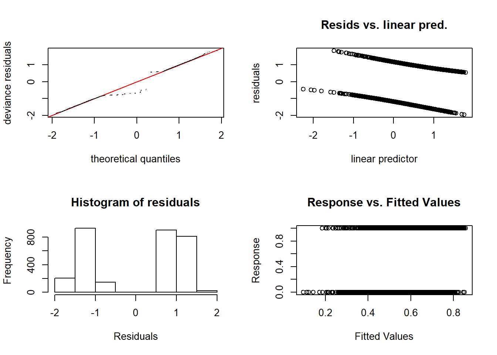
##
## Method: REML Optimizer: outer newton
## full convergence after 4 iterations.
## Gradient range [-0.001839484,-5.380839e-05]
## (score 1961.362 & scale 1).
## Hessian positive definite, eigenvalue range [0.03238313,1.045585].
## Model rank = 19 / 19
##
## Basis dimension (k) checking results. Low p-value (k-index<1) may
## indicate that k is too low, especially if edf is close to k'.
##
## k' edf k-index p-value
## s(arsenic) 9.00 4.35 1.01 0.66
## s(distance) 9.00 2.17 0.97 0.08 .
## ---
## Signif. codes: 0 '***' 0.001 '**' 0.01 '*' 0.05 '.' 0.1 ' ' 1Dans ce cas, il est préférable d’évaluer l’ajustement du modèle en groupant les résidus. La fonction binnedplot du package arm ordonne les observations en ordre croissant de valeurs prédites, puis groupe les observations avec prédictions similaires. Elle produit ensuite un graphique du résidu moyen par groupe en fonction de la prédiction moyenne, avec intervalle de prédiction à 95%.
library(arm)
binnedplot(fitted(mod_wells), residuals(mod_wells, type = "response"))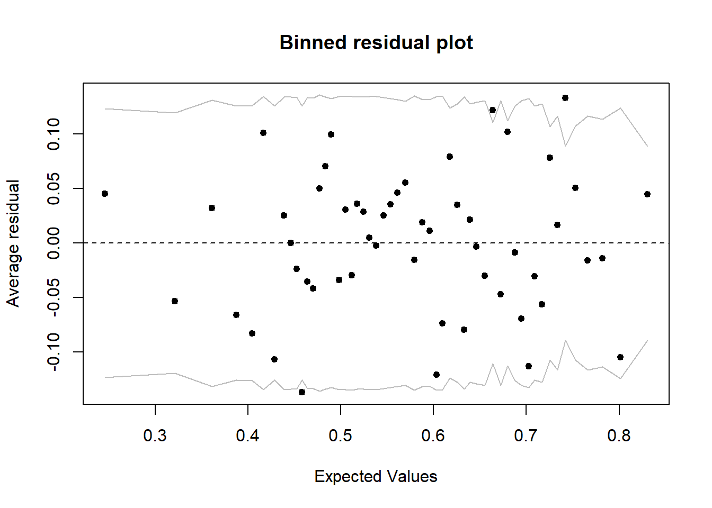
Par exemple, si un groupe de ménages avait une prédiction moyenne de 60% et que 55% d’eux ont changer de puits, le résidu est de -0.05. Ici, nous ne percevons pas de tendance parmi les résidus groupés et 94% d’entre eux (48/51) se retrouvent dans l’intervalle de prédiction à 95%.
Visualiser les effets avec predict
En raison de la forme du lien logit, les effets additifs sur l’échelle du logit ne sont plus additifs sur l’échelle de la probabilité prédite \(p\). Dans ce cas, pour visualiser les effets des prédicteurs sur \(p\), il est préférable de créer une grille de valeurs et d’appliquer la fonction predict. Voici un aperçu de la méthode à suivre:
Créer un jeu de données avec différentes combinaisons des valeurs des prédicteurs.
Calculer pour chaque rangée de ce jeu de données les prédictions du modèle et leurs erreurs-types sur l’échelle du logit (
type = "link", l’option par défaut danspredict).Calculer l’intervalle de confiance à 95% sur l’échelle du logit, soit \(\pm 1.96\) erreurs-type de part et d’autre de la prédiction moyenne, puis ramener les prédictions moyennes et les intervalles sur l’échelle de \(p\) avec
plogis.
Note: La distribution des estimés s’approche davantage d’une distribution normale sur l’échelle du logit, plutôt que sur l’échelle de \(p\). C’est pourquoi il faut calculer les intervalles avant de transformer, plutôt que de calculer l’intervalle avec les résultats de predict(... type = response).
# Création de la grille
pred_df <- expand.grid(arsenic = seq(0, 8, 0.5), distance = c(25, 50, 100, 200))
# Prédictions avec erreur-type (se) sur l'échlle du logit
pred_se <- predict(mod_wells, pred_df, se = TRUE)
# Transformation de la moyenne et des bornes de l'intervalle avec plogis
pred_df$pred <- plogis(pred_se$fit)
pred_df$lo <- plogis(pred_se$fit - 1.96 * pred_se$se.fit)
pred_df$hi <- plogis(pred_se$fit + 1.96 * pred_se$se.fit)Le graphique suivant illustre les effets prédits avec leur intervalle de confiance. Notez encore une fois que l’incertitude augmente pour les valeurs élevées de distance ou de concentration d’arsenic.
ggplot(pred_df, aes(x = arsenic, y = pred, ymin = lo, ymax = hi)) +
geom_ribbon(aes(fill = as.factor(distance)), alpha = 0.3) +
geom_line(aes(color = as.factor(distance))) +
scale_color_brewer(palette = "Dark2") +
scale_fill_brewer(palette = "Dark2") +
labs(y = "p(switch)", color = "distance", fill = "distance")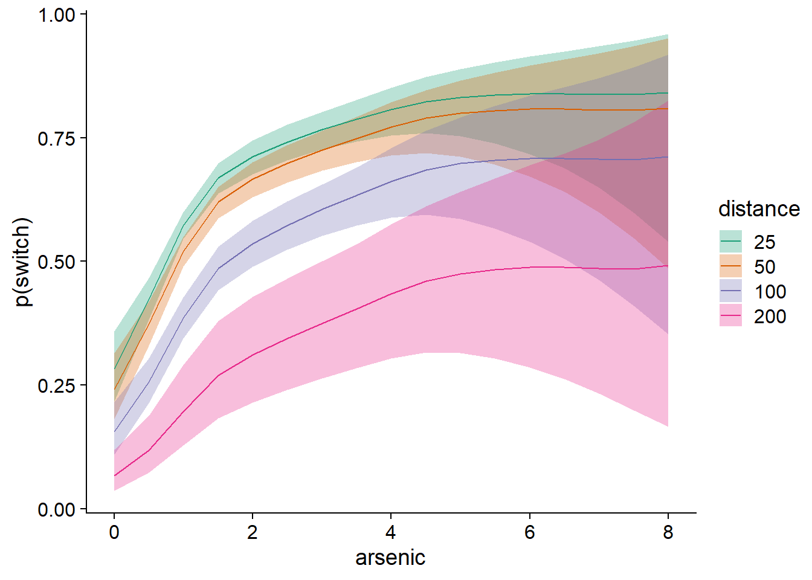
Modèles additifs à effets mixtes
Finalement, nous donnerons un bref exemple de l’ajout d’effets aléatoire à un modèle additif, pour produire un modèle additif généralisés à effets mixtes (GAMM). Pour plus d’informations et d’exemples à ce sujet, vous pouvez consulter l’excellent article de Pedersen et al. (2019) inclus dans les références à la fin de ces notes.
Exemple
Le jeu de données CO2 inclus dans R présente des données du taux d’absorption du CO2 (uptake) par différentes plantes en fonction de la concentration de CO2 ambiante (conc). Les plantes proviennent de deux provenances (Type, Québec ou Mississippi) et ont subi l’un de deux traitements (Treatment prenant la valeur “chilled” ou “nonchilled”).
data(CO2)
CO2$Plant <- factor(CO2$Plant)
head(CO2)## Grouped Data: uptake ~ conc | Plant
## Plant Type Treatment conc uptake
## 1 Qn1 Quebec nonchilled 95 16.0
## 2 Qn1 Quebec nonchilled 175 30.4
## 3 Qn1 Quebec nonchilled 250 34.8
## 4 Qn1 Quebec nonchilled 350 37.2
## 5 Qn1 Quebec nonchilled 500 35.3
## 6 Qn1 Quebec nonchilled 675 39.2Ajustons d’abord un modèle additif de l’effet (non-linéaire) de la concentration de CO2 sur l’absorption, plus un différence constante entre les traitements. Nous ignorons donc pour l’instant le fait que des mesures répétées ont été effectuées sur chaque plante.
mod_co2 <- gam(log(uptake) ~ s(log(conc), k = 5) + Treatment,
data = CO2, method = "REML")Note:
Après avoir testé les deux options, la concentration de CO2 et l’absorption ont été log-transformées pour obtenir une meilleure normalité et homogénéité des résidus.
Nous réduisons le nombre de fonctions de base à 5 car la variable conc a seulement 7 niveaux et \(k\) ne peut dépasser le nombre de valeurs distinctes du prédicteur.
Voici le graphique des effets estimés pour ce modèle.
plot(mod_co2, all.terms = TRUE, pages = 1, residuals = TRUE, pch = 1,
shift = coef(mod_co2)[1], seWithMean = TRUE)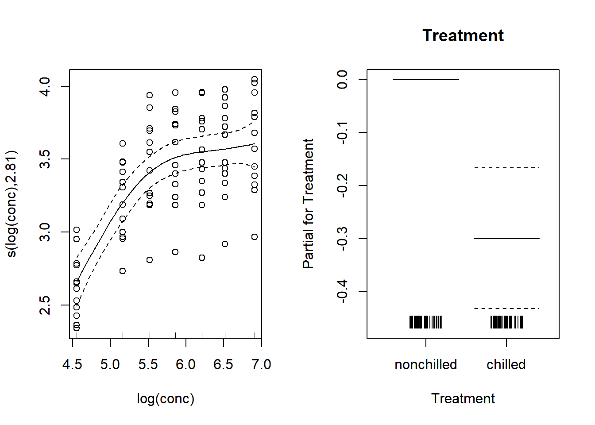
Effets aléatoires sur l’ordonnée à l’origine
Pour inclure un effet aléatoire de l’identité de la plante sur l’ordonnée à l’origine, nous ajoutons un terme s(Plant, bs = "re"). Ici, “re” signifie random effect, donc il ne s’agit pas d’une spline, mais bien d’un effet aléatoire, équivalent à (1 | Plant) selon la syntaxe utilisée par le package lme4. Cet effet décale la courbe d’absorption vs. concentration d’une plante à l’autre, mais la forme de cette courbe ne change pas.
mod_co2_re <- gam(log(uptake) ~ s(log(conc), k = 5) + s(Plant, bs = "re") + Treatment,
data = CO2, method = "REML")Voici les graphiques des effets estimés. L’effet aléatoire des plantes est indiqué sur un diagramme quantile-quantile, ce qui nous permet en même temps de vérifier la normalité de ces effets aléatoires.
par(mfrow = c(1, 3))
plot(mod_co2_re, all.terms = TRUE, residuals = TRUE, pch = 1,
shift = coef(mod_co2_re)[1], seWithMean = TRUE)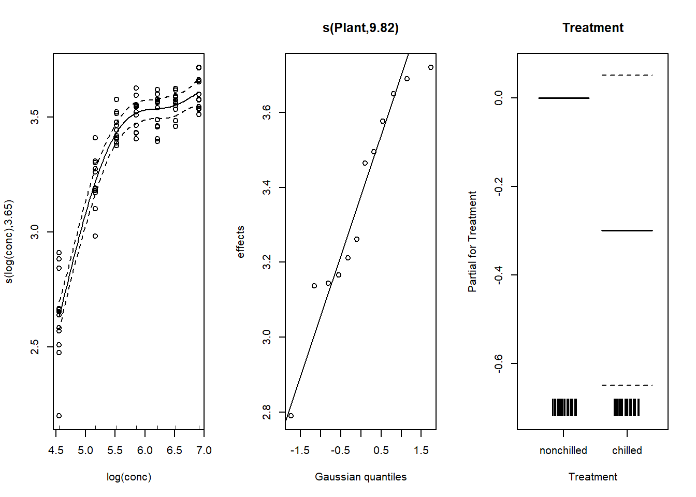
Notez que l’inclusion d’un effet aléatoire permet d’estimer plus précisément la courbe absoprtion vs. concentration. Aussi, la différence entre les traitements n’est plus significative (l’intervalle de confiance inclut 0), car le traitement est constant par plante et le modèle précédent ne tenait pas compte de la non-indépendance des mesures prises sur la même plante.
Effets aléatoires sur la forme d’une spline
L’interaction entre spline et facteur (bs = "fs") constitue une façon de modéliser un effet aléatoire de groupe sur la forme d’une spline, tel que démontré ci-dessous.
mod_co2_fs <- gam(log(uptake) ~ s(log(conc), k = 5) +
s(log(conc), Plant, k = 5, bs = "fs") +
Treatment, data = CO2, method = "REML")Ici, la première spline représente l’effet de conc sur la “plante moyenne”, tandis que la deuxième spline (avec bs = "fs") représente les déviations de cette spline pour chaque plante. Ce deuxième terme est analogue à l’effet aléatoire d’un facteur sur une pente estimée dans un modèle linéaire mixte (i.e. (1 + log(conc) | Plant).
Voici le graphique de ces effets aléatoires par rapport à la spline moyenne. Notez que l’argument shift a été omis ici, car il est plus facile d’interpréter les effets aléatoires (graphique du milieu) comme des déviations par rapport à la moyenne.
par(mfrow = c(1, 3))
plot(mod_co2_fs, all.terms = TRUE, residuals = TRUE, pch = 1)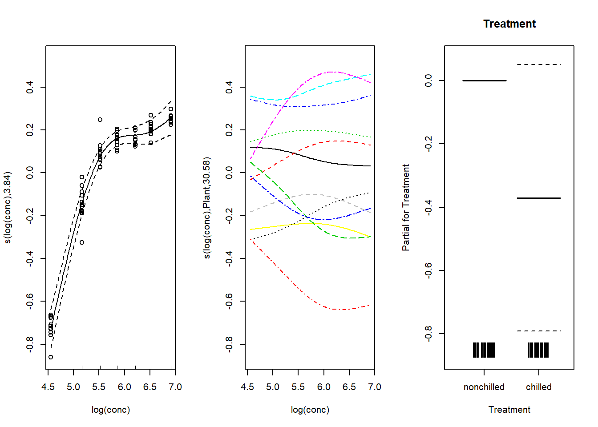
Nous pouvons aussi utiliser predict pour visualiser les courbes estimées pour chaque plante.
CO2_pred <- mutate(CO2, pred = predict(mod_co2_fs))
ggplot(CO2_pred, aes(x = log(conc), y = log(uptake), color = Plant)) +
geom_point() +
geom_line(aes(y = pred))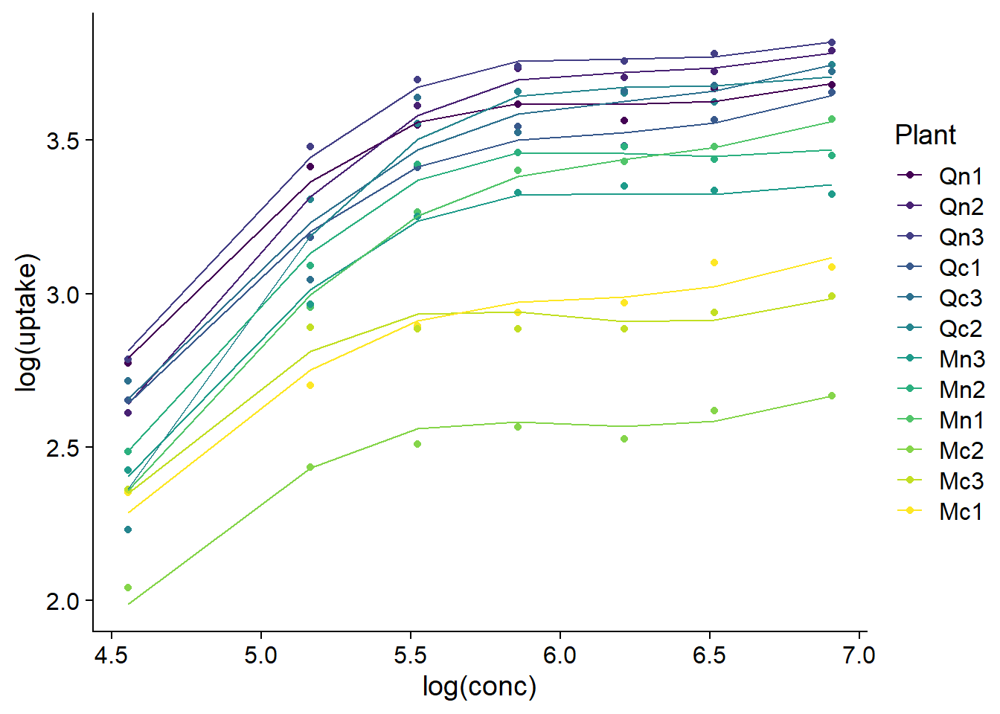
Références
Pedersen, E.J. et al. (2019) Hierarchical generalized additive models in ecology: an introduction with mgcv. PeerJ 7:e6876.
Cours de Noam Ross “GAMs in R” (https://noamross.github.io/gams-in-r-course/)